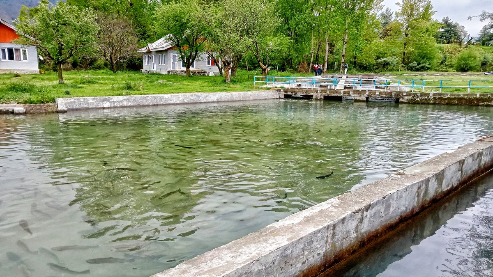
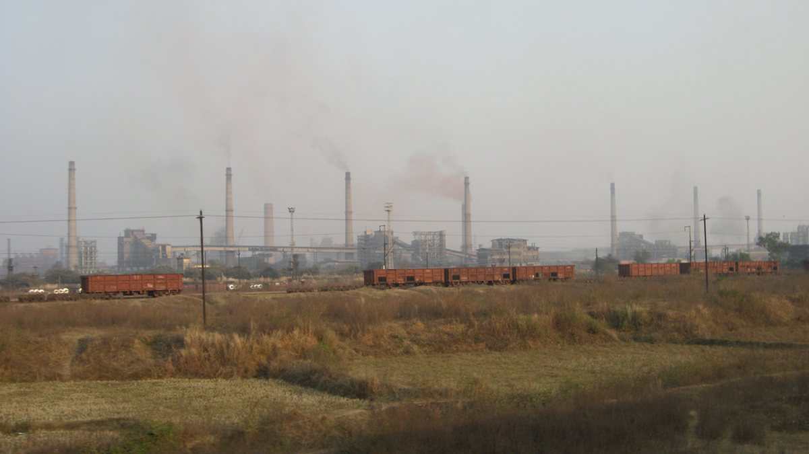
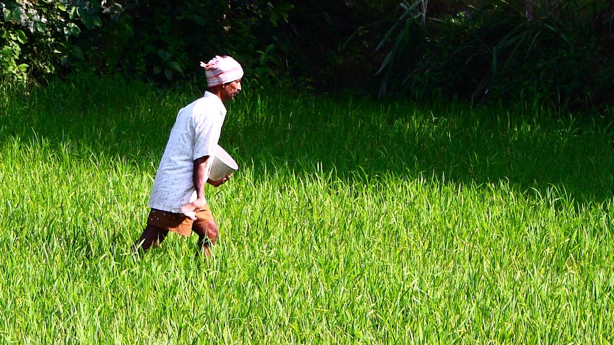
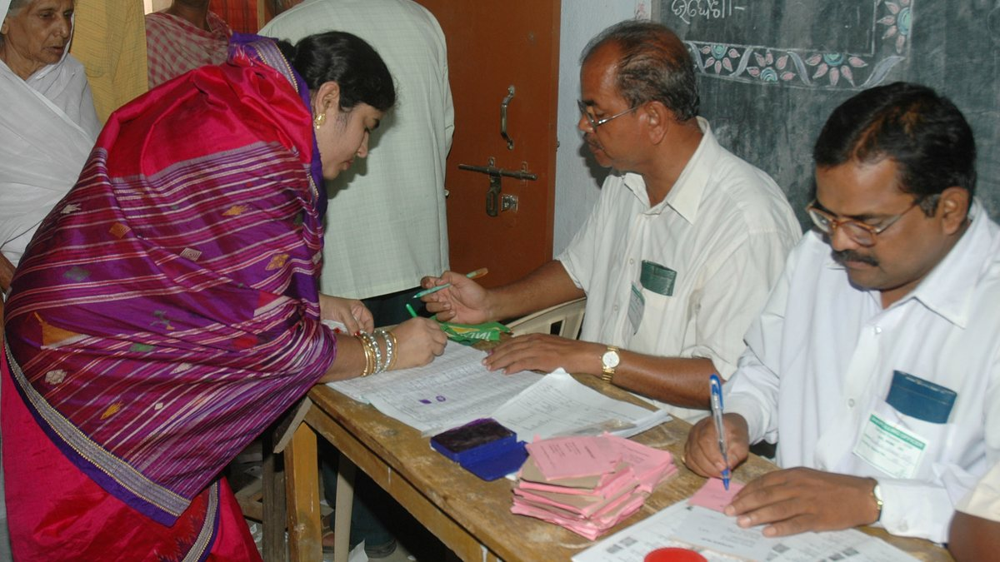

Padma Awards 2026: Why the Civil Investiture Still Matters
The first Civil Investiture Ceremony for the Padma Awards 2026 put national recognition back at the centre of India's public conversation.
Independent India explainers
Explained simply through fresh, source-linked articles on elections, AI, semiconductors, infrastructure, agriculture, sport, security, and the economy.
The first Civil Investiture Ceremony for the Padma Awards 2026 put national recognition back at the centre of India's public conversation.
Freshly published

Cold water fisheries are moving from remote streams to organised aquaculture, livelihood support, conservation, and mountain enterprise.
Commerce Minister Piyush Goyal's May 2026 remarks underline how India is pitching trust, talent, scale, and testing infrastructure to global industry.

April 2026 core industries data shows modest overall growth, with steel, cement, and electricity offsetting weakness in coal, crude oil, gas, refinery products, and fertilisers.

ICAR's nationwide campaign ahead of Kharif 2026 is pushing soil-test-based nutrient management, bio-fertilisers, vermicomposting, and integrated nutrient practices.

The draft National Water Metro Policy points to an 18-city rollout, with Phase I cities including Guwahati, Srinagar, Patna, Varanasi, Ayodhya, and Prayagraj.
MeitY's state data cybersecurity workshop is part of a four-stage process to build a national framework with inputs from all 36 states and Union Territories.
Explore by section
PatelsVine includes clear navigation, original long-form articles, author and policy pages, source links, mobile-friendly design, no copied photos, no prohibited content, and indexable SEO pages.
Important reads
April 2026 core industries data shows modest overall growth, with steel, cement, and electricity offsetting weakness in coal, crude oil, gas, refinery products, and fertilisers.
ICAR's nationwide campaign ahead of Kharif 2026 is pushing soil-test-based nutrient management, bio-fertilisers, vermicomposting, and integrated nutrient practices.
The draft National Water Metro Policy points to an 18-city rollout, with Phase I cities including Guwahati, Srinagar, Patna, Varanasi, Ayodhya, and Prayagraj.

The May 2026 assembly results across Assam, Kerala, Tamil Nadu, West Bengal, and Puducherry point to a more competitive and fragmented federal map.